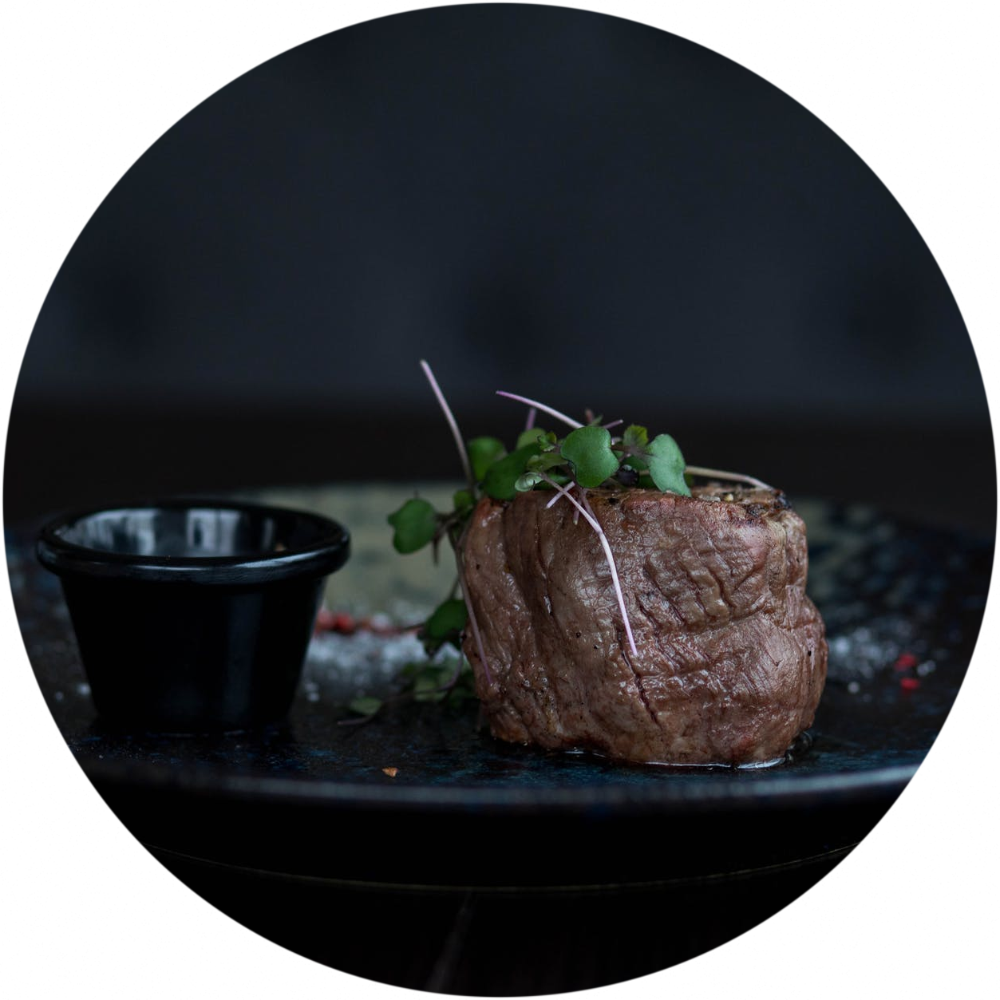

Our Signature Dish
Yak Steak from Mustang
Enjoy our premium Yak Steak sourced directly from the Himalayan region of Mustang. Known for its lean and flavorful profile, this dish brings a rich mountain heritage to your table.
Explore Full Menu

Why You'll Love It
- Rich, tender steak with a smoky mountain touch
- Natural, organic spices sourced locally
- Cooked to perfection over open flame
- A cultural experience in every bite